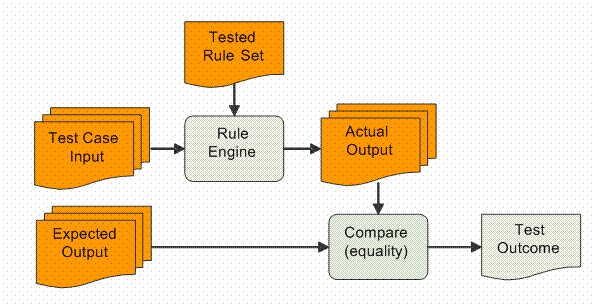
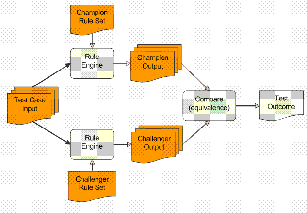
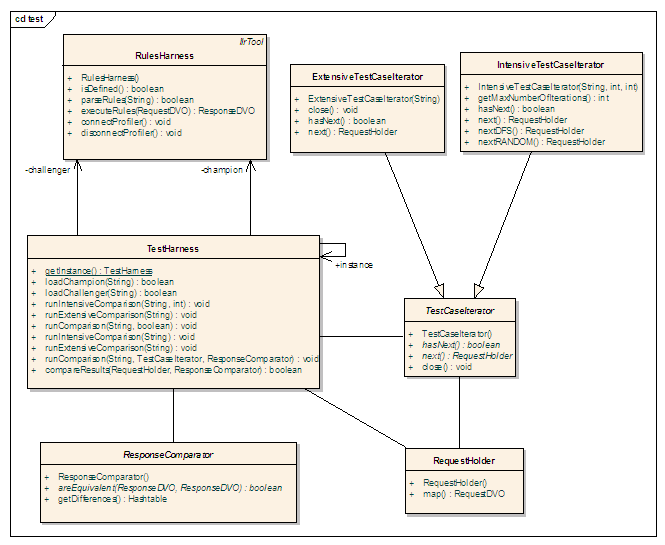

| Guideline: Delta-Testing |
 |
|
| Related Elements |
|---|
AbstractMaintaining an adequate level of quality assurance for applications with a high rate of business rules turnover presents a challenge for many IT departments: the test cases require constant update from business experts to adjust the expected results to the rule changes. Consequently, only a limited number of test cases can usually be maintained. We propose in this paper a simple but efficient approach, called delta testing, which by-passes the need for maintaining expected results, using instead the set of rule currently in production as the reference for testing the new set of rules. This approach allows the development of more test cases with less involvement from the business experts, thus providing a more thorough and less expensive QA strategy. IntroductionThe process of testing a conventional piece of software is usually implemented by first elaborating a test plan, which leads to the design of various test suites (1), then running these test suites on a regular basis to ensure the correctness and stability of the system through its development and maintenance. A test case is generally composed of pair of data sets: the input data and the corresponding (expected) output data. Executing a test case consists in submitting the input data to the system and comparing the actual output to the expected output: if they match, the test case execution is considered successful. The initial investment required in creating the test cases, especially the part about manually devising the expected output values is usually non-negligible. However, this investment gets quickly amortized since the same test suite executions are repeated over time for regression testing purpose. Also and more importantly, the expected values of a test case do not change, unless the system requirements themselves are changing, which should rarely occur in a conventional system. This assumption does not hold true for business rule based systems. Indeed, the essence of business rules engines and the reason why they have been brought into the enterprise software picture is to provide a quick turnaround for frequent business requirement changes and adjustments. Still, the ability to quickly implement and deploy incremental changes that comes with the business rules paradigm does not exonerate us from applying a stringent unit-testing and quality assurance process. With business rules based systems, the problem that we face is that we need to preserve the rapid implementation and deployment of changes while still running the set of test cases necessary to ensure the system correctness. If we decide to stick with the standard approach of comparing expected versus actual results, we need to review and update the expected values of the test cases whenever the requirements are updated and a new rule set is deployed. As we mentioned before, devising the expected results of test cases is a step which requires a significant time investment from a group of precious business Subject Matter Experts (SME). These experts are often a scarce resource, which can hardly, if at all, be supplemented by external contractors. It is thus essential for the organization IT group to find a way to partly automate the testing of incremental changes in a rule based application. We present here a testing approach which does not replace, but complements the use of expected results. It is based on the comparison of the output from the currently tested and deployed rule set (referred to as the champion rule set) with the output from the updated rule set currently being tested (referred to as the challenger rule set). The concept of pass/fail is based on an equivalence function which semantics is specific to a test suite and which determines, for a given test case, if the difference between the output from the champion and the challenger rule set is acceptable or not. This incremental difference (or delta) testing approach is more declarative and local than the traditional one; the question we have to ask ourselves while designing the test cases is now "what changes from the previous version should we expect in the output" rather than the traditional "what output should we expect". The main benefit is that testing does not depend on the SME resources to define and update the test cases. Also, the approach allows the quick definition and execution of large sets of tests cases, making quality assurance for rule sets more realistic and thorough. In the following sections, we present in more details the concept, the benefits and the implementation of the delta-testing approach for business rules. Application in Mortgage LendingWe selected mortgage underwriting (and pre-qualification) as a supporting application domain example for our presentation. Mortgage underwriting applications are especially relevant to delta-testing because changes to the business rules are frequent and incremental. This is particularly true in the sub-prime lending area, where underwriting guidelines changes often come out weekly, to adjust to ever new and creative lending options and also heavy competition among lenders. Some example of data involved in mortgage underwriting is the type of property (e.g. Condominium, Single Family Residence, Manufactured Homes), the FICO score of the applicant, Extensive information on the domain (data dictionary, XML DTDs) can be found at http://www.mismo.org, the site for the Mortgage Industry Standards Maintenance Organization, which maintains electronic commerce standards for the mortgage industry. Delta TestingThe data flow of a conventional testing framework is presented on Figure 1. The framework involves a single rule engine which runs the tested rule set and two sets of user data input: the test cases input data and the expected output data.  Figure 1: Conventional Testing Framework By contrast, the delta testing framework involves two rule engines, one for the champion rule set and the other for the challenger rule set, and a single set of user data input, which is the test cases data input.  Figure 2: Delta Testing Framework While the response comparison process in a conventional testing framework is always based on strict equality, delta testing needs to use a more flexible notion of equivalence. Using equality leads to qualitative delta testing. Using a custom equivalence function leads to quantitative delta testing. These two approaches and their specific use are detailed in the following sections. Qualitative Delta TestingThe simplest way to exploit delta-testing is to test for strict equality between all the output values from the champion and challenger rule set. The qualitative indication is whether or not the changes implemented by the challenger rule set are affecting the outcome of the test case execution. As a result, we get a partition of the test cases in (1) the set which yield an identical output and (2) the set which yield a different output. Qualitative testing can be used to assess the following:
Quantitative Delta TestingBy using quantitative delta-testing, i.e. by actually examining the difference in value between the output from the champion and the challenger rule sets, we can achieve more specific testing and increase the usefulness and coverage of our testing. Here, instead of using a strict equality criterion, we are testing that the difference between the value from the champion output and the value from the challenger output is equal to a certain expectation such as a constant offset value. For example, the base rates for mortgage products are often required to change. To test that the change is correctly implemented, we simply need an equivalence function which compares the difference between the base rate of the champion and the challenger and compares it to the base rate difference that should be introduced by the rules change. While requirement changes are frequent in business rules, they are often repetitive in nature and can be categorized in a set of recurrent types of changes, such as change in base rate or, change in the set of underwriting conditions, etc... So, after a few cycles of requirement changes, we end up with a set equivalence functions implemented as a "comparison tool-box" that we can reuse to test most of the future requirement changes. Intensive Test Cases DefinitionWe have shown in the previous sections that by using delta-testing, we can perform some quality assurance without having to deal with expected values. By using intensive test case definitions from domains, we now show how we can generate large amount of test cases from concise descriptions. In most cases, the variable values in a business application either belong to a finite discrete domain (e.g. PropertyType in [SingleFamily, Condominium, Townhouse, …]) or can be discretized in buckets from which a representative value can be selected (e.g. CreditScore in [499, 500, 550, …] orLTV in[60.0, 65.0, 70.0, …]). This aspect is key in setting up intensive (versus extensive) descriptions of large sets of test case input data. An extensive description of the test cases input values consists in listing all the values for all the variables involved in the input data set. For example, test cases can be defined by the following tuples: TC1 = {{CreditScore, 700}, {PropertyType, Condominium}, …} TC2 = {{CreditScore, 700}, {PropertyType, SingleFamily}, …} TC3 = {{CreditScore, 750}, {PropertyType, Condominium}, …} TC4 = {{CreditScore, 750}, {PropertyType, SingleFamily}, …} An intensive description consists in listing all the desired values for each variable (sub-domains), and adjoining a strategy that traverses the cross-product of these sub-domains to generate the extensive version of the test cases. For example, the above 4 test cases can be represented intensively by the following description. TC1...4 = {{CreditScore,{700, 750}}, {PropertyType,{Condominium, SingleFamily}}, …} This definition is concise and the number of test cases it represents grows exponentially by adding values in the sub-domains. For example, adding 2 values to the PropertyType sub-domain and 3 values to the CreditScore leads to 20 different test cases instead of 4. Let us suppose that a guideline change for the Condominium property type has been implemented and we need to test the updated rule set. We know that for all property type other than Condominium, no change in the output should occur, and that for the Condominium type, two specific conditions should be added to the output. We can thus devise 2 sets of test cases:
Using intensive test case definition is completing the delta-testing approach by allowing the creation of large number of test case input data without having to spell out each individual test case. The intensive definition prescribes which possible values can be used in the test case data. The actual construction of the test cases is left to an automated enumeration mechanism. Extensive Test Case DefinitionOne of the best sources of test cases for systems running in production is obviously the application database which logs the system client transactions. The most significant business data combinations can be obtained in large numbers from this database. Delta testing makes it possible to profit from this large set of test cases, mainly through quantitative delta testing. Tens of thousand real life test cases can be extracted from the database and executed each time a new rule set is to be released to verify the extent of the rule change, as described in the Qualitative Delta Testing section. Sample Test Harness ImplementationWe propose here some highlights of a sample practical implementation of the delta testing harness. It allows the selection of a champion and a challenger rule set file, and the execution of a batch of test suites defined in a batch file. For each test suite, two Excel (CSV) files are generated: one which records the test cases input data which produce an equivalent output through the comparison function and the other which records the test case input data which produce a non-equivalent output. Batch File DefinitionThe batch file is composed of a set of test suite definitions. Each line of the batch file can either be blank, or a comment line (line which first non-blank character is #) or a test suite definition of one of the two forms below: INT <output> <domains> <order> <count> [<comparator> [<arg1> … <argn>]] EXT <output> <testcases> <count> [<comparator> [<arg1> … <argn>]] The INT prefix is for test suites using intensive test case definition, while EXT is for test suites using extensive test case definition. The test suite parameters definitions are:
<variable> = <value1> … <valuen>
Batch File ExampleBelow is an example of the content of a batch file with 4 test suites, testing 2 main business requirement changes: # Test suite for release 2.5.1 # Testing requirement "decrease base rate by 15bps" # INT base rel251.domains RANDOM 1000 BaseRateComparator -0.15 # Testing requirement "decrease minimum rate for FIXED products by 25bps" # INT min15x15 rel251.domains RANDOM 500 MinimumRateComparator FIXED15x15 -0.25 INT min30x30 rel251.domains RANDOM 500 MinimumRateComparator FIXED30x30 -0.25 # Running regression tests # EXT regression regression.csv 5000 This example shows the use of 2 comparator classes: BaseRateComparator and MinimumRateComparator. These comparators (equivalence functions) are dedicated to test respectively a change (increase or decrease) of base rates and a change (increase or decrease) of minimum rates for a given mortgage product. Once implemented, these comparators can be reused for all such routine changes. While the first 3 test suites are using an intensive test case definition through a domain file, the last test suite uses the regression.csv file as the set of extensive test case definition. This test suite does not specify any custom comparator and will thus use the default strict equality. Domains File ExampleBelow is an excerpt of a domains file: State = CALIFORNIA MARYLAND VIRGINIA DELAWARE HAWAII MICHIGAN FLORIDA LOUISIANA PropertyValue = 60000 100000 110000 120000 150000 160000 200000 300000 400000 Ltv = 65 70 75 80 85 90 95 100 CreditScore = 500 580 600 639 640 700 720 750 760 DocumentationType = FullDocumentation NoDocumentation Reduced PurchaseType = Purchase Refinance Other PropertyType = SingleFamily Condominium Townhouse Modular PUD PropertyUsageType = Investor Primary Residence SecondHome Note that when using the RANDOM traversal order for domain, the same value can be repeated multiple times for a given variable, so that the probability distribution is different for different values. For example, if we want to reflect that most of the time, the PropertyType value is SFR, we can specify the following sub-domain: PropertyType = SingleFamily Condominium Modular PUD PUD PUD This example gives PUD a 50% chance of being selected in the test cases generation process versus a 16.7% chance for the other property types.. Test Harness DesignThe class structure of the test harness that supports delta-testing is illustrated on Figure 3. TestHarness is the central class from which the rule sets are loaded and the batch test file is run. It uses 2 instances of RuleHarness, one for the champion, one for the challenger, which are representing the 2 engine instances. The TestCaseIterator class is an abstract class with 2 concrete subclasses: IntensiveTestCaseIterator is responsible for implementing an iterator which, given a domains file, iterates over the tuples of values which can be produced from the sub-domains. ExtensiveTestCaseIterator is responsible for implementing an iterator through the tuples of values defined by each row of a given CSV file. A tuple is represented by an instance of the RequestHolder class, which provides a mapping function to the actual request object from the application BOM. The ResponseComparator class is an abstract class which declares the equivalence function areEquivalent between 2 instances of the response object from the application BOM. The ExactComparator subclass performs the strict equality comparison between 2 response objects. Other specific comparator classes are implemented for quantitative testing. Note that our sample implementation of the test harness is making a heavy use of Java reflection to traverse and compare the content of the responses from the rule engines.  Figure 3: Test Harness Class Diagram ConclusionWhile business rules based applications usually receive proper testing on their initial release, we often fail to plan for (and even sometime to realize) that:
Add to this the scarcity of SMEs able to maintain the test case base, and we obviously need a testing paradigm that is not solely based on the comparison of actual against expected results. We proposed a framework that is based instead on the comparison of champion against challenger results. Among the expected benefits are:
(1) We use the term test suite for a collection of test cases dedicated to the test of a specific system feature. |
This program and the accompanying materials are made available under the |